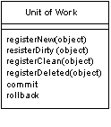
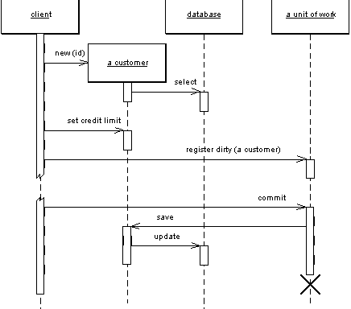
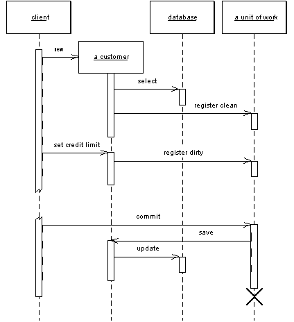
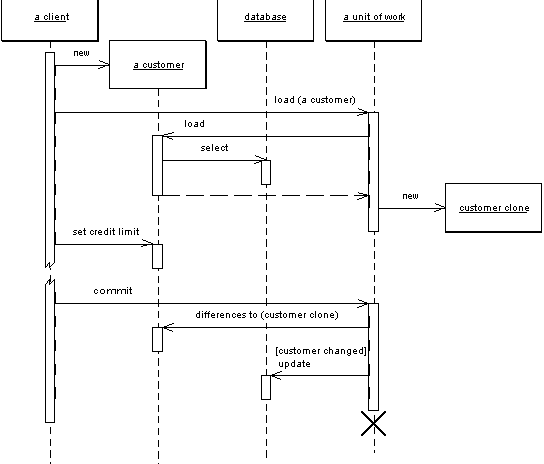

| Home | Articles | Talks | Links | Contact Me | ISA | ThoughtWorks |
Maintains a list of objects that are affected by a business transaction and coordinates the writing out of changes and resolution of concurrency problems.

When you're pulling data in and out of a database, it's important to keep track of what you've changed, otherwise you won't get stuff written back into the database. Similarly you have to insert new objects you create and remove any object you've deleted.
You could change the database with each change to your object model, but this can lead to lots of very small calls to the database, which ends up being very slow. Furthermore it requires you to have a transaction open for the whole interaction - which is impractical if you have a business transaction that spans multiple requests. This situation is even worse if you need to keep track of objects you've read so you can avoid inconsistent reads.
A Unit of Work keeps track of everything you do during a business transaction that can have ramifications to the database. When you are done, it figures out all everything that needs to be done to alter the database as a result of all the work.
The obvious things that cause you to deal with the database are changes: new object created and existing ones updated or deleted. Unit of Work is an object that keeps track of these things. As soon as you start doing something that may affect a database, you create a Unit of Work to keep track of the changes. Every time you create, change, or delete an object you tell the Unit of Work. You can also let the Unit of Work know about objects you've read. This way the Unit of Work can check for inconsistent reads by verifying that none of the objects changed on the database during the business transaction.
The key thing about Unit of Work is that when it comes time to commit, the Unit of Work decides what to do. It opens a transaction, does any concurrency checking (using Pessimistic Offline Lock or Optimistic Offline Lock and writes changes out to the database. Application programmers never explicitly call methods to update the database. This way they don't have to keep track of what's changed, nor do they need to worry about how referential integrity affects the order in which they need to do things.
Of course for this to work the Unit of Work needs to know what objects it should keep track of. You can do this either by the caller doing it or by getting the object to tell the Unit of Work.
With caller registration the user of an object needs to remember to register the object with the Unit of Work for changes. Any objects that aren't registered won't get written out on commit. Although this allows forgetfulness to cause trouble, it does give flexibility in allowing people to make in-memory changes that they don't want written out - although we would argue that is going to cause far more confusion that would be worthwhile. It's better to make an explicit copy for that purpose.
Figure 1: Having the caller register a changed object
With object registration the onus is removed from the caller. The usual trick here is to place registration methods in object methods. Loading an object from the database registers the object as a clean object, the setting methods cause the object to be registered as dirty. For this scheme to work the Unit of Work needs to either be passed to the object or to be in a well known place. Passing the Unit of Work around is tedious, but it's usually no problem to have the Unit of Work present in some kind of session object.
Figure 2: Getting the receiver object to register itself
Even object registration leaves something to remember, that is the developer of the object needs to remember to add a registration call in the right places. The consistency becomes habitual, but is still an awkward bug when it's missed.
This is a natural place for code generation to generate appropriate calls, but that only works when you can clearly separate generated and non-generated code. This turns out to be particularly suited to aspect-oriented programming. I've also come across post-processing of the object files to pull this off. In this example a post-processor examined all the Java .class files, looked for the appropriate methods and inserted registration calls into the byte code. This kind of finicking around feels dirty, but it separates the database code from the regular code. Aspect-oriented approach will do this more cleanly with source code, and as aspect oriented programming tools become more commonplace I would expect to see this strategy being used.
Another technique I've seen is unit of work controller, which the TOPLink product uses. Here the Unit of Work handles all reads from the database, and registers clean objects whenever they are read. Rather than marking objects as dirty the Unit of Work takes a copy at read time, and then compares the object at commit time. Although this adds overhead to the commit process, it allows a selective update of only those fields that were actually changed, as well as avoiding registration calls in the domain objects. A hybrid approach is to take copies only of objects that are changed, while this requires registration, it supports selective update and greatly reduces the overhead of the copy if there many more reads than updates.
Figure 3: Using the Unit of Work as the controller for the database access
Creating an object is often a special time to consider caller registration. It's not uncommon for people to want to create objects that are only supposed to transient. A good example of this is in testing domain objects where the tests will run much faster without database writes. Caller registration can make this apparent. However there are other solutions, such as providing a transient constructor that doesn't register with the unit or work, or better still providing a Special Case Unit of Work that does nothing with a commit.
Another area where a Unit of Work can be helpful is in update order when a database uses referential integrity. Most of the time you can avoid this issue by ensuring that the database only checks referential integrity when the transaction commits, rather than with each SQL call. Most databases allow it, and if available there's no good reason not to do it. If you can't then the Unit of Work is the natural place to sort out the update order. In smaller systems this can be done with explicit code that contains details about which tables to write first based on the foreign key dependencies. In a larger application it's better to use metadata to figure out which order to write to the database. How you do that is beyond the scope of this book, and a common reason to use a commercial tool. If you have to do it yourself I'm told the key to the puzzle is a topological sort.
You can use a similar technique to minimize deadlocks. If every transaction uses the same sequence of tables to edit, then you greatly reduce the chances of getting deadlocks. The Unit of Work is an ideal place to hold a fixed sequence of table writes so that you always touch the tables in the same order.
Objects need to be able to find their current Unit of Work. A good way to do this is to use a thread scoped Registry. Another approach is to pass the Unit of Work around to objects that need it, either in method calls or by passing in the Unit of Work when you create an object. In either case make sure you can't get more than one thread getting access to a Unit of Work, there lies the way to madness.
Unit of Work makes an obvious point to handle batch updates. The idea behind a batch update is to send multiple SQL commands as a single unit so that they can be processed in a single remote call. This is particularly important for updates where many updates, inserts, and deletes are often sent in rapid succession. Different environments provide different levels of support for batch updates. JDBC has a batch update facility which allows you to add individual statements to another statement to batch them up. If you don't have this you can mimic this capability by building up a string that has multiple SQL statements and then submitting that string as one statement, [missing reference] describes an example of this for the Microsoft platforms. However if you do this, check to see if it interferes with statement pre-compilation.
Unit of Work works with any transactional resource, not just databases, so you can also use it to coordinate with message queues and transaction monitors.
The Unit of Work in .NET is done by the disconnected data set, which is a slightly different Unit of Work to the classical variety. Most Unit of Work I've come across register and track changes to objects. .NET reads data from the database into a data set, which is a series of objects arranged like the tables, rows and columns of the database. The data set is essentially an in-memory mirror image of the result of one or SQL queries. Each DataRow has the concept of a version (current, original, proposed) and a state (unchanged, added, delete, modified). This information, together with the fact that the data set mimics the database structure, makes it straightforward to write changes out to the database.
The fundamental problem that Unit of Work deals with is keeping track of the various objects that you've manipulated, so that you know which objects you need to consider to synchronize your in-memory data with the database. If you are able to do all your work within a system transaction, then the only objects you need to worry about are those you alter. Although Unit of Work is generally the best way of doing this, there are alternatives.
Perhaps the simplest alternative is to explicitly save any object whenever you alter it. The problem here is that you may get many more database calls than you would like, since if you alter one object in three different points in your work, then you get three calls rather than one call in its final state.
To avoid multiple database calls, you can leave all your updates to the end. To do this you need to keep track of all the objects that have changed. You can do this with variables in your code, but this soon becomes unmanageable once you have more than a few. Such variables often can work fine with a Transaction Script, but is very difficult with a Domain Model.
Rather than keep objects in variables you can give each object a dirty flag which you set when the object changes. Then you need to find all the dirty objects at the end of your transaction and write them out. The value of this technique hinges on how easy it is to find them. If all your objects are in a single hierarchy, then you can traverse the hierarchy and write out any object that's been changed. But a more general object network, such as a Domain Model, is harder to traverse.
The great strength of Unit of Work is that it keeps all this information in one place. Once you have Unit of Work working for you, you really don't have to remember to do much in order to keep track of your changes. Unit of Work also is a firm platform for more complicated situations, such as handling business transactions that span several system transactions using Optimistic Offline Lock and Pessimistic Offline Lock.
by David Rice
Here's a unit of work that can track all changes for a given business transaction and then commit them to the database when instructed to do so. Our domain layer has a Layer Supertype, DomainObject, with which the unit of work will interact. To store the change set we will use three lists to store new, dirty, and removed domain objects.
class UnitOfWork... private List newObjects = new ArrayList(); private List dirtyObjects = new ArrayList(); private List removedObjects = new ArrayList();
The registration methods maintain the state of these lists. These methods must perform basic assertions such as checking that an id is not null or that a dirty object is not being registered as new.
class UnitOfWork...
public void registerNew(DomainObject obj) {
Assert.notNull("id not null", obj.getId());
Assert.isTrue("object not dirty", !dirtyObjects.contains(obj));
Assert.isTrue("object not removed", !removedObjects.contains(obj));
Assert.isTrue("object not already registered new", !newObjects.contains(obj));
newObjects.add(obj);
}
public void registerDirty(DomainObject obj) {
Assert.notNull("id not null", obj.getId());
Assert.isTrue("object not removed", !removedObjects.contains(obj));
if (!dirtyObjects.contains(obj) && !newObjects.contains(obj)) {
dirtyObjects.add(obj);
}
}
public void registerRemoved(DomainObject obj) {
Assert.notNull("id not null", obj.getId());
if (newObjects.remove(obj)) return;
dirtyObjects.remove(obj);
if (!removedObjects.contains(obj)) {
removedObjects.add(obj);
}
}
public void registerClean(DomainObject obj) {
Assert.notNull("id not null", obj.getId());
}
Notice that registerClean() doesn't do anything here. A common practice is to place an Identity Map within a unit of work. An Identity Map is necessary most anytime you are storing domain object state in memory, such as in this unit of work, as multiple copies of the same object will result in undefined behavior. Were an Identity Map in place registerClean() would put the registered object into the map. Likewise registerNew() would put a new object in the map and registerRemoved() would remove a deleted object from the map. Without the Identity Map you have the option of not including registerClean() in your Unit of Work. I've seen implementations of registerClean() that remove changed objects from the dirty list but partially rolling back changes is always tricky. Be careful when reversing any state in the change set.
commit() will locate the Data Mapper for each object and invoke the appropriate mapping method. updateDirty() and deleteRemoved() are not shown but they would behave in similar fashion to insertNew(), exactly as would expect.
class UnitOfWork...
public void commit() {
insertNew();
updateDirty();
deleteRemoved();
}
private void insertNew() {
for (Iterator objects = newObjects.iterator(); objects.hasNext();) {
DomainObject obj = (DomainObject) objects.next();
MapperRegistry.getMapper(obj.getClass()).insert(obj);
}
}
Not included in this Unit of Work is tracking of any objects we've read and would like to check for inconsistent read errors upon commit. This is addressed in Optimistic Offline Lock
Next, we need to facilitate object registration. First, each domain object needs to find the Unit of Work serving the current business transaction. Since the Unit of Work will be needed by the entire domain model passing it around as a parameter is probably unreasonable. As each business transaction executes within a single thread we can associate the Unit of Work with the currently executing thread using the java.lang.ThreadLocal class. Keeping things simple we'll add this functionality by using static methods on our Unit of Work class. If we already had some sort of session object associated to the business transaction execution thread we should place the current Unit of Work on that session object rather than add the management overhead of another thread mapping. Besides, the Unit of Work would logically belong to the session anyway.
class UnitOfWork...
private static ThreadLocal current = new ThreadLocal();
public static void newCurrent() {
setCurrent(new UnitOfWork());
}
public static void setCurrent(UnitOfWork uow) {
current.set(uow);
}
public static UnitOfWork getCurrent() {
return (UnitOfWork) current.get();
}
We can now provide our abstract domain object marking methods to register itself with the current Unit of Work:
class DomainObject...
protected void markNew() {
UnitOfWork.getCurrent().registerNew(this);
}
protected void markClean() {
UnitOfWork.getCurrent().registerClean(this);
}
protected void markDirty() {
UnitOfWork.getCurrent().registerDirty(this);
}
protected void markRemoved() {
UnitOfWork.getCurrent().registerRemoved(this);
}
Concrete domain objects then need to remember to mark themselves new and dirty where appropriate.
class Album...
public static Album create(String name) {
Album obj = new Album(IdGenerator.nextId(), name);
obj.markNew();
return obj;
}
public void setTitle(String title) {
this.title = title;
markDirty();
}
Not shown is that registration of removed objects can be handled by a remove() method on the abstract domain object and if you've implemented registerClean() your Data Mapper will need to register any newly loaded object as clean.
The final piece is to register and commit the Unit of Work where appropriate. This can be done in either explicit or implicit fashion. Here's what explicit Unit of Work management looks like:
class EditAlbumScript...
public static void updateTitle(Long albumId, String title) {
UnitOfWork.newCurrent();
Mapper mapper = MapperRegistry.getMapper(Album.class);
Album album = (Album) mapper.find(albumId);
album.setTitle(title);
UnitOfWork.getCurrent().commit();
}
Beyond the simplest of applications implicit Unit of Work management is more appropriate to avoid repetitive, tedious coding. Here's a servlet Layer Supertype that registers and commits the Unit of Work for its concrete subtypes. Subtypes will implement handleGet() rather than override doGet(). Any code executing within handleGet() will have a Unit of Work with which to work.
class UnitOfWorkServlet...
final protected void doGet(HttpServletRequest request, HttpServletResponse response)
throws ServletException, IOException {
try {
UnitOfWork.newCurrent();
handleGet(request, response);
UnitOfWork.getCurrent().commit();
} finally {
UnitOfWork.setCurrent(null);
}
}
abstract void handleGet(HttpServletRequest request, HttpServletResponse response)
throws ServletException, IOException;
The above servlet example is obviously a bit simplistic in that system transaction control is skipped. And if you were using Front Controller you would be more likely to wrap Unit of Work management around your commands rather than doGet(). Similar wrapping approaches can be taken with just about any execution context.
 |  |